КОМПЛЕКС ПЕРСПЕКТИВНОГО РАЗВИТИЯ Г. МОСКВЫ
УПРАВЛЕНИЕ РАЗВИТИЯ ГЕНПЛАНА Г. МОСКВЫ
МОССТРОЙЛИЦЕНЗИЯ
ВЕДОМСТВЕННЫЕ
СТРОИТЕЛЬНЫЕ НОРМЫ
УКАЗАНИЯ
ПО УСТРОЙСТВУ ФУНДАМЕНТОВ
НА ЕСТЕСТВЕННОМ ОСНОВАНИИ
ПРИ СТРОИТЕЛЬСТВЕ ЖИЛЫХ ДОМОВ
ПОВЫШЕННОЙ ЭТАЖНОСТИ
ВСН 37-96
МОСКВА - 1997
Указания по устройству фундаментов на естественном основании при строительстве жилых домов повышенной этажности разработаны лабораторией оснований и фундаментов НИИМосстроя (к.т.н. В. А. Трушков) при участии Мосстройлицензии (инж. Ю. И. Столяров и к.т.н. В. Д. Фельдман).
Инструкция составлена на основе результатов научно-исследовательских работ, выполненных НИИМосстроем, и многолетнего опыта специализированных организаций, занимающихся устройством фундаментов в г. Москве.
Указания согласованы с АОХК «Главмосстрой», АООТ «Мосфундаментстрой-2», АОЗТ «Мосфундаментстрой-6» и АООТ «Мосфундаментстрой-8».
|
Комплекс перспективного развития г. Москвы |
Ведомственные строительные нормы |
ВСН 37-96 Комплекса перспективного развития г. Москвы |
|
|
Указания по устройству фундаментов на естественном основании при строительстве жилых домов повышенной этажности |
|||
|
Управление развития Генплана г. Москвы |
|
||
|
Мосстройлицензия |
|
1.1. Настоящие указания распространяются на работы по устройству фундаментов на естественном основании для домов повышенной этажности, возводимых из типовых жилых секций.
1.2. При устройстве фундаментов на естественном основании для домов повышенной этажности надлежит руководствоваться рабочими чертежами, требованиями действующих глав СНиП, нормативными документами, ППР и технологическими картами, а также Указаниями по производству земляных работ в жилищно-гражданском строительстве, осуществляемом организациями Главмосстроя.
1.3. До начала работ нулевого цикла генподрядные строительные организации должны:
принять от заказчика документацию на объекты в соответствии с СН-202-81*;
принять от заказчика строительную площадку и геодезическую разбивку осей зданий и сооружений;
разработать с привлечением субподрядных организаций проект производства работ нулевого цикла и согласовать со всеми организациями-участниками объемы и сроки работ;
подготовить строительную площадку к работам нулевого цикла;
до начала механизированных земляных работ, включающих шпунтовые ограждения и отрывку котлована под фундамент, направить соответствующему управлению механизации заказ на выполнение работ с приложением технической документации, предусмотренной приказом руководителя АО ХК «Главмосстрой».
|
Внесены НИИМосстроем |
Утверждены Управлением развития Генплана г. Москвы «27» декабря 1996 г. |
Дата введения в действие «1» января 1997 г. |
1.4. Проектно-сметная документация, передаваемая для выполнения работ по устройству фундаментов на естественном основании должна соответствовать требованиям действующих СНиПов, соответствующим директивным указаниям настоящей инструкции и другим действующим нормативным материалам.
1.5. В состав проектно-сметной документации включаются:
строительный паспорт;
техническое заключение об инженерно-геологических условиях участка строительства, включающее заключение по результатам испытаний грунтов;
генеральный план;
проект вертикальной планировки и картограмма земляных работ;
проект внутриквартальных дорог и тротуаров;
строительный генеральный план (стройгенплан);
рабочие чертежи сооружений;
сметы по рабочим чертежам.
Проектно-сметная документация должна быть утверждена и согласована в установленном порядке.
1.6. При приемке от заказчика проектно-сметной документации необходимо проверить соответствие мест расположения скважин по отчету об инженерно-геологических изысканиях местоположению зданий по генеральному плану. Если в зону здания попадает менее двух буровых скважин, требуемых по СНиП, проектно-сметная документация не принимается до проведения дополнительных инженерно-геологических изысканий.
1.7. Размеры и очертания строительной площадки определяются стройгенпланом проекта организации строительства (ПОС).
До приемки генподрядчиком строительной площадки заказчик должен:
- передать генподрядчику проектно-сметную документацию и ведомость на пересадку (вырубку) зеленых насаждений;
- переселить граждан из строений, подлежащих разборке;
- оплатить выселяемым из сносимых домов гражданам стоимость фруктовых деревьев;
- освободить подлежащие сносу, а также сохраняемые, предназначенные для использования строительной организацией в период строительства, нежилые строения;
- отключить коммуникации, подведенные к сносимым сооружениям, и демонтировать оборудование в соответствии с требованиями СНиП III-10-75 «Благоустройство территории. Правила производства и приемки работ»;
- вынести в натуре красные линии и закрепить их на местности в соответствии с требованиями «Инструкции по производству геодезических работ при строительстве крупнопанельных жилых зданий», ВСН-23-77; СНиП 3.01.03-84 «Геодезические работы в строительстве»;
- указать адрес свалки и расстояние до нее.
1.8. Проект производства работ нулевого цикла по своему содержанию должен соответствовать требованиям главы СНиП 3.01.01-85* «Организация строительного производства», настоящей инструкции и другим действующим нормативным документам.
Проект производства работ составляется генподрядной организацией с привлечением организаций, выполняющих субподрядные работы, либо разрабатывается специализированным трестом Мосоргстрой по заказу генподрядной организации.
Субподрядная организация (или по ее заказу трест Мосоргстрой) составляет ППР на выполняемые ею виды работ и согласовывает ППР с генподрядной организацией.
В качестве временных помещений возводятся инвентарные сборно-разборные сооружения в соответствии с альбомом ЦПБ Главмоспромстройматериалов или приспосабливаются строения, подлежащие сносу. Предпочтение следует отдавать передвижным средствам (автофургоны, передвижные бытовки и т.д.), закрепляемым за отдельными участками и коллективами и перебазируемым управлением механизации по заявкам подрядчика или субподрядчика.
1.10. Механизированные земляные работы нулевого цикла обязаны выполнять управления механизации по договору субподряда с организациями трестов фундаментостроения или организациями общестроительных трестов. При этом управления механизации выполняют следующий комплекс работ:
устройство земляного корыта и песчаного основания под постоянные и временные внутриквартальные дороги и проезды;
рытье котлованов и траншей под фундаменты зданий и сооружений с последующей зачисткой, а в случае необходимости - устройством песчаной подготовки. В котлованах должны быть сделаны въезды и выезды (для въезда автотранспорта и установки при необходимости кранов для производства работ внутри котлованов и т.п.).
планировка дна котлована производится по отметкам;
планировка площадок для складирования строительных элементов;
засыпка грунта под полы технического подполья (подвала), в пазухи у фундаментов и стен подземной части зданий с послойным уплотнением грунта;
вертикальная планировка территории застройки с уплотнением грунта в местах подсыпок;
земляные работы по благоустройству территорий (вспашка газонов, рытье ям для деревьев и кустарников и др.).
1.11. Необходимая для выполнения земляных работ геодезическая разбивка зданий в натуре с вынесением осей на обноску, а также установка в необходимом количестве реперов с вынесением на них высотных отметок выполняется генподрядными организациями трестов фундаментостроения или общестроительных.
Указанные организации должны оказывать содействие управлениям механизации своей геодезической службой в контроле за производством работ до проектных отметок.
Ответственность за выполнение земляных работ по проектным отметкам и габаритам в основании, а также за соблюдение крутизны откосов, установленной правилами техники безопасности и техническими условиями на производство земляных работ, возлагается на управление механизации.
2.1. При использовании естественных грунтов в качестве оснований должны применяться методы строительных работ, не допускающие ухудшения природных свойств грунтов и качества подготовленного основания вследствие замачивания, размыва грунтовыми и поверхностными водами, повреждения механизмами и транспортными средствами, промерзания и выветривания.
Перерыв между окончанием разработки котлована и устройством фундамента, как правило, не допускается. При вынужденных перерывах должны быть приняты меры к сохранению природных свойств грунта. Зачистка дна котлована до проектных отметок (на 5-7 см) должна производиться непосредственно перед устройством фундамента. Переборы грунта основания ниже проектных отметок не допускаются. Случайные переборы в отдельных местах должны быть заполнены местным грунтом или песком и доведены до проектной плотности.
В ответственных случаях места переборов заполняются гравием или тощим бетоном. Способ заполнения переборов грунта следует согласовать с проектной организацией.
2.2. До устройства фундаментов должны быть выполнены работы по отводу поверхностных и грунтовых вод от котлована и подкрановых путей. Это достигается путем организации стока поверхностных вод посредством вертикальной планировки территории, устройства открытых и закрытых водоотводных и дренажных систем. Способ удаления воды из котлована (открытый водоотлив, дренаж, водопонижение и др.) должен быть выбран с учетом местных условий и согласован с проектной организацией. При этом должны быть предусмотрены меры против выноса водой грунта из-под возводимых и существующих сооружений и нарушения природных свойств грунтовых оснований.
2.3. Открытый водоотлив из котлована может быть применен в разнообразных грунтовых условиях и при различной глубине, но при обязательном соблюдении требований п. 2.2.
2.4. При устройстве дренажей должны выполняться требования к составу, размерам и свойствам дренирующих материалов, а также к соблюдению заданных уклонов дренажей.
2.5. Законченный и подготовленный для устройства фундаментов котлован должен быть освидетельствован и принят по акту (форма УГАСКа № 6) представителем Мосгоргеотреста и авторского надзора. Должны быть установлены реперы и закреплены оси здания.
Строительная площадка должна быть оборудована в соответствии с требованиями пп. 1.3; 1.7; 1.9 настоящей инструкции. К возводимому зданию должны быть завезены необходимые конструкции и инвентарь, смонтировано крановое оборудование. Приемку, складирование и хранение материалов следует производить в соответствии с ВСН-28-66 «Указания по приемке, складированию и хранению основных стройматериалов» и СНиП III-4-80* «Техника безопасности в строительстве».
2.6. К работам по устройству песчаной, бетонной или иной подготовки разрешается приступать только после доработки недобора грунта и при наличии акта о приемке котлованов с грунтовым основанием, подготовленным в соответствии с требованиями пп. 2.5 настоящей инструкции.
2.7. Доработка недобора грунта (6-7 см), оставшегося на принятом по акту основании сверх проектных отметок, производится непосредственно перед устройством подготовки. При устройстве подготовки повреждение грунтового основания недопустимо. Песчаная, гравийная или щебеночная подготовка должна быть выполнена в соответствии с проектом и уплотнена.
2.8. Бетонирование бетонной подготовки производится по захваткам в соответствии с проектом производства работ.
2.9. Уплотнение уложенной в подготовку бетонной смеси следует производить поверхностными вибраторами типа ИВ-91 с последующим выравниванием поверхности подготовки виброрейками или рейками-правилами по маячным рейкам.
2.10. Если проектом предусмотрено устройство по бетонной подготовке цементно-песчаной стяжки, последняя устраивается путем выравнивания цементно-песчаного раствора рейками-правилами по маячным рейкам.
2.11. Гидроизоляция с прижимной плитой устраивается согласно проекту в соответствии с требованиями СНиП II-26-76 «Кровли».
2.12. Поверхности бетонной подготовки и прижимной плиты следует сразу же после окончания схватывания цемента (в жаркую погоду через 6-8 часов после окончания укладки бетона, а в прохладную - через 12-24 часа) очистить от цементной пленки. При этом не должны допускаться повреждения бетона, прочность которого должна быть в пределах:
при обработке воздушной или водяной струей - 2-3 кг/см2;
при обработке механизмами, снабженными металлическими щетками - 15-25 кг/см2;
при обработке с помощью гидропескоструйной установки или шарошки - 50-100 кг/см2.
Для удаления пленки с поверхности бетона не следует пользоваться ударными инструментами (отбойными молотками, бучардами на базе перфораторов и др.).
Для удаления пленки с бетона рекомендуется пользоваться механизмами, оснащенными металлическими щетками и инерционными фрезами (например, механизмами конструкции ЦНИИОМТП, чертеж № 83500000, и с гибким валом - типа С-975).
2.13. При выполнении бетонных работ должен быть обеспечен уход за уложенным бетоном, предотвращающий его пересыхание и растрескивание, а также повреждение неокрепшего бетона дождем. Ходить и ездить по неокрепшему бетону запрещается.
2.14. Работы по подготовке грунтового основания и по производству бетонных работ в зимних условиях должны производиться с соблюдением требований соответствующих СНиПов и этого раздела настоящей инструкции.
3.1. При устройстве опалубки монолитных фундаментных плит и отдельных фундаментов надлежит руководствоваться рабочими чертежами, проектом производства работ, СНиП 2.03.01 «Бетонные и железобетонные конструкции», «Руководством по применению опалубки для монолитных железобетонных конструкций» (ЦНИИОМТП, 1972) и настоящей инструкции.
3.2. Наружная опалубка фундамента устанавливается из инвентарных деревянных щитов (например, унифицированная опалубка ЦНИИОМТП) или в виде стенок из бетонных блоков, изготовляемых для стен подвала и используемых после распалубки по назначению.
3.3. Материал, конструкция и крепление опалубки устанавливаются проектной организацией с учетом устойчивости, прочности и жесткости при воздействии распора бетонной смеси в процессе бетонирования. При этом опалубка должна обеспечивать проектное положение фундамента в плане и по высоте, а также заданную точность его размеров.
3.4. Для обеспечения многократной оборачиваемости обращенную к бетону поверхность щитов обивают тонкой листовой сталью либо пластмассовыми листами или др. материалами.
3.5. Опалубка должна быть плотной и не допускать при бетонировании утечки цементного молока через швы и щели, которые должны быть тщательно заделаны. Для облегчения распалубки обращенную к бетону поверхность опалубки следует смазывать антиадгезионной смазкой (например, известковым молоком, цементным раствором или гидрофобным составом).
3.6. При выполнении работ по армированию фундаментной плиты в местах рабочих швов по границам блоков (захваток) бетонирования, определенных в технологической карте, устанавливается внутренняя опалубка, которая изготавливается в виде стальной сетки из проволоки диаметром 1-1,1 мм с размером ячеек не более 5×5 мм (рис. 1). Перед установкой и бетонированием сетка должна быть обезжирена. Сетки устанавливаются вертикально и крепятся вязальной проволокой к стержням нижней и верхней арматурных сеток плиты по линии рабочих швов. При толщине плит более 0,6 м сетки во избежание выпучивания усиливаются вертикальными, а при необходимости и горизонтальными арматурными стержнями, места расположения и диаметр которых должны быть указаны в ППР.
3.7. Смонтированная и подготовленная к бетонированию опалубка должна быть принята по акту. При этом отклонения плоскостей опалубки от вертикали не должны превышать 5 мм на 1 м высоты; смещение осей опалубки от проектного положения - 10 мм; местные неровности при проверке двухметровой рейкой - 3 мм. В процессе бетонирования надлежит вести непрерывное наблюдение за состоянием опалубки и креплений, своевременно предотвращая деформации опалубки.
4.1. Армирование фундаментов должно выполняться в соответствии с рабочими чертежами; проектом производства работ; главами СНиП 2.03.01-84* «Бетонные и железобетонные конструкции», ГОСТ 10922-75 «Арматура и закладные детали сварные для железобетонных конструкций. Технические требования», «Руководством по производству арматурных работ» (ЦНИИОМТП, 1977); настоящей инструкцией и другими действующими нормативными документами.
4.2. Монтаж арматуры фундаментной плиты или отдельного фундамента разрешается производить только после приемки по акту грунтового основания и подготовки под фундамент.
4.3. Арматуру следует монтировать укрупненными или пространственными заранее изготовленными элементами, по возможности сокращая объем применения отдельных стержней. Проект производства работ должен содержать указания о последовательности монтажа отдельных элементов арматуры, способах стыкования стержней и крепления узлов, необходимом оборудовании и приспособлениях.
Порядок установки арматуры должен быть указан с технологической схемой бетонирования фундаментной плиты. Установка арматуры должна опережать бетонирование не менее чем на одну захватку.
4.4. С бетонной подготовки в местах установки арматуры должны быть удалены мусор, грязь, снег и лед. Стержни установленной в плиту арматуры должны быть обезжирены, очищены от грязи, льда и снега, налета ржавчины.
4.5. Требуемую проектом величину защитного слоя нижней арматуры следует обеспечивать посредством установки под нижние стержни заранее изготовленных бетонных прокладок (сухарей) размером 100×100 мм и толщиной, равной требуемой толщине защитного слоя. Применение прокладок из обрезков арматуры, деревянных брусков и щебня запрещается. Для нижней арматуры монолитных фундаментных плит и отдельных фундаментов толщина защитного слоя должна быть не менее:
при наличии бетонной подготовки - 35 мм;
при отсутствии бетонной подготовки - 70 мм.
4.6. Отклонения от проектной толщины бетонного защитного слоя не должны превышать:
при толщине защитного слоя 15 мм и менее - 3 мм;
при толщине защитного слоя более 15 мм - 5 мм.
Смещение арматурных стержней при их установке, а также в арматурных каркасах и сетках не должно превышать 0,25 диаметра устанавливаемого стрежня, но не более 0,2 наибольшего диаметра стержня.
4.7. Армирование плиты выполняется в следующем порядке:
на бетонной подготовке производят разбивку осей каркасов (или подставок);
укладывают готовые бетонные прокладки для образования нижнего защитного слоя. Прокладки следует устанавливать так, чтобы в процессе работ не деформировались стержни нижней сетки и везде под ней соблюдалась требуемая толщина защитного слоя;
по прокладкам согласно проекту укладывают унифицированные сетки или (если сетка выполняется из россыпи стержней) заранее сваренные в плети стержни нижней сетки. Плети сваривают из стержней товарной длины согласно спецификации проекта или с учетом условий транспортирования на место укладки.
По нижней сетке производится установка каркасов, сварка их между собой, приварка или привязка их к нижней сетке. На каркасы укладывают унифицированные сетки или заранее сваренные в плети верхней арматурной сетки с приваркой или привязкой их к стержням каркасов (рис. 2, 3). Если вместо каркасов для поддержания верхней арматуры предусмотрена установка заготовляемых централизованно подставок (монтажных столиков), то эти подставки устанавливаются без приварки к арматуре нижней сетки так, чтобы концы угловых стоек опирались на бетонную подготовку или же нижние поперечные элементы подставки опирались на стержни нижней сетки. Затем в соответствии с проектом по подставкам раскладываются и свариваются либо связываются с ними унифицированные сетки или сваренные в плети стержни верхней арматурной сетки (рис. 4, 5).
4.8. Стыковые соединения арматуры следует выполнять в соответствии с проектом и требованиями СНиП 2.03.01-84* «Бетонные и железобетонные конструкции», СН 393-78 «Инструкция по сварке соединений арматуры и закладных деталей железобетонных конструкций», ГОСТ 14098-68 «Соединения сварные арматуры железобетонных изделий и конструкций. Контактная и ванная сварка» и других действующих нормативных документов.
Рис. 1. Внутренняя опалубка рабочего шва плиты
1 - вертикальные стержни усиления; 2 - горизонтальные стержни усиления
Рис. 2. Армирование плиты по схеме - нижняя арматурная сетка - плоские или пространственные каркасы - верхняя арматурная сетка
1 - нижняя сетка; 2 - каркас; 3 - верхняя сетка
Рис. 3. Установка арматуры монолитной фундаментной плиты
Рис. 4. Армирование плиты по схеме: - нижняя арматурная сетка - монтажный столик - верхняя арматурная сетка:
1 - нижняя сетка; 2 - монтажный столик; 3 - верхняя сетка
Рис. 5. Установка монтажных столиков при армировании плиты
Крестовые пересечения стержней арматуры, смонтированных поштучно, в местах их пересечения, обозначенных в проекте, следует скреплять вязальной проволокой или с помощью специальных проволочных соединительных элементов (скрепок). При диаметре стержней свыше 25 мм их скрепления следует выполнять дуговой сваркой.
4.9. Стыки рабочей арматуры, а также сварных сеток и каркасов в рабочем направлении внахлестку без сварки должны иметь длину перепуска не менее величины, требуемой СНиП 2.03.01-84*. При этом стыки должны располагаться вразбежку так, чтобы площадь сечения рабочих стержней, стыкуемых в одном месте или на расстоянии менее перепуска, составляла не более 50 % общей площади сечения растянутой арматуры при стержнях периодического профиля и не более 25 % - при гладких стержнях. Стыки внахлестку сварных сеток в направлении рабочей арматуры из стали класса А-I должны выполняться так, чтобы в каждой из стыкуемых в растянутой зоне сеток на длине нахлестки располагалось не менее двух поперечных стержней, приваренных ко всем продольным стержням сеток. Такие же стыки применяются и для стыкования внахлестку сварных каркасов с односторонним расположением рабочих стержней из всех видов стали. Стыки сварных сеток в направлении рабочей арматуры из горячекатанной стали периодического профиля классов А-II, А-III и Ат-III выполняются без поперечных стержней в пределах стыка в одной или в обеих стыкуемых сетках. Стыки сварных сеток в нерабочем направлении выполняются внахлестку с перепуском, считая между крайними рабочими стержнями сетки:
при диаметре распределительной арматуры до 4 мм включительно - на 50 мм;
при диаметре распределительной арматуры боле 4 мм - на 100 мм;
при диаметре рабочей арматуры 16 мм и более сварные сетки, допускается укладывать впритык друг к другу, перекрывая стык специальными стыковыми сетками, укладываемыми с перепуском в каждую сторону не менее 15 диаметров распределительной арматуры и не менее 100 мм.
4.10. Контроль качества сварных соединений арматуры должен производиться в соответствии с ГОСТ 10922-75 «Арматура и закладные детали сварные для железобетонных конструкций. Технические требования». Смонтированная арматура должна быть закреплена от смещений и предохранена от повреждений, могущих иметь место при бетонировании.
4.11. Приемка смонтированной арматуры, а также сварных стыков соединений должна осуществляться до укладки бетона и производиться при участии представителя авторского надзора и оформляться актом освидетельствования скрытых работ.
5.1. Бетонирование монолитной фундаментной плиты и отдельных фундаментов должно производиться в соответствии с рабочими чертежами, проектом производства работ, СНиП 2.03.01-84 «Бетонные и железобетонные конструкции», настоящей инструкцией, «Руководством по производству бетонных работ» (М., Стройиздат, 1975), «Картами пооперационного контроля производства работ по устройству монолитных фундаментных плит (Мосоргпромстрой, 1975) и СНиП III-4-80* «Техника безопасности в строительстве».
5.2. Бетонирование разрешается выполнять только после освидетельствования и приемки по акту бетонной подготовки, стяжки, прижимной плиты, арматуры плиты и опалубки при условии письменного разрешения авторского надзора в журнале работ.
5.3. Положение в плане, высотные отметки и размеры арматуры и опалубки фундамента, подготовленных к бетонированию, должны соответствовать проекту и требованиям соответствующих СНиПов.
5.4. Перед бетонированием фундамента бетонную подготовку (или прижимную плиту), опалубку и арматуру следует очистить от мусора, грязи, битума, масел; промыть (при положительной температуре); воду, оставшуюся на поверхности, удалить. В зимнее время удалить снег и наледь, что рекомендуется производить горячим воздухом под брезентом или полиэтиленовым укрытием. Удалять снег и наледь паром или водой не разрешается. Арматура должна быть очищена от налета ржавчины. Обращенные к бетону поверхности деревянной опалубки (подлежащей разборке) и блочной прижимной стенки должны быть обильно окрашены известковым или цементным молоком или покрыты гидрофобным составом, а щели в опалубке - заделаны.
5.5. До начала бетонирования плиты проект производства работ при необходимости следует корректировать в соответствии с возможностями строительных организаций и условиями обеспечения производства работ.
5.6. Бетонирование плиты следует производить непрерывным способом в пределах отдельных блоков (захваток), по границам которых устраиваются рабочие швы (см. п. 3.6).
5.7. Расположение, объем и сроки бетонирования блоков (схема бетонирования плиты) устанавливаются проектом и отражаются в ППР по согласованию со строительной организацией с учетом:
принятого метода и темпов бетонирования;
площади, толщины и конфигурации плиты;
условий обеспечения фронта работ по бетонированию;
необходимости выполнить бетонирование блока не больше чем за одну или две смены.
5.8. Для предотвращения температурно-усадочных трещин массивные плиты бетонируют отдельными зонами, включающими несколько блоков. Количество блоков в зонах и расположение их определяются проектом. Бетонирование замыкающих блоков должно производиться только после усадки и охлаждения смыкаемых блоков.
5.9. Во избежание образования не предусмотренных проектом рабочих швов в плите (наклонных и горизонтальных), снижающих прочность плиты, необходимо выбрать такой способ и темп бетонирования, чтобы каждый блок (захватка) был полностью забетонирован в требуемое время без недопустимых перерывов в бетонировании. Допустимый разрыв во времени при бетонировании соседних блоков (захваток) устанавливается ППР. Укладка бетонной смеси после перерывов в бетонировании допускается после приобретения уложенным бетоном прочности не менее 15 кг/ см2.
5.10. Бетонирование с помощью кранов с бункерами (бадьями) следует применять при наличии большого количества выпусков арматуры в плитах (для следующего бетонирования стен, ядер жесткости др.) при темпах работ по бетонированию до 50 м3 в смену на один кран.
5.11. Бетонирование из автобетоносмесителей, автобетоновозов и автосамосвалов непосредственно в плиту следует применять для плит с объемом укладки до 200-300 м3 в смену. Для такого темпа работы необходимы соответствующий фронт работ, подъезды (пандусы).
Плиты, в которых арматурный каркас запроектирован с учетом нагрузок от езды автотранспорта, загруженного бетонной смесью, следует бетонировать методом «на себя» с проездом автотранспорта по деревянному настилу, уложенному в верхней арматурной сетке (рис. 6).
Плиты, в которых арматурный каркас запроектирован без учета упомянутых нагрузок, могут бетонироваться методом «от себя» (рис. 7) с проездом самосвалов по уложенному бетону после достижения бетоном необходимой по расчету прочности, но не менее 50 кг/см2.
5.12. Проезд автотранспорта по уложенному бетону осуществлять по полосам шириной 0,7 м из досок толщиной 40 мм, укладываемых под колеса автосамосвалов. Конструкция настила для проезда самосвалов по верхней сетке арматурного каркаса определяется ППР.
Рис. 6. Бетонирование плиты автобетоносмесителями, автобетоновозами или автосамосвалами методом «на себя»:
1 - готовый участок плиты; 2 - бетонная смесь; 3 - автобетоновоз; 4 - накат из бревен; 5 - настил из досок; 6 - прижимная стенка; 7 - верхняя арматурная сетка; 8 - нижняя арматурная сетка; 9 - столики или промежуточный арматурный каркас; 10 - рабочий шов
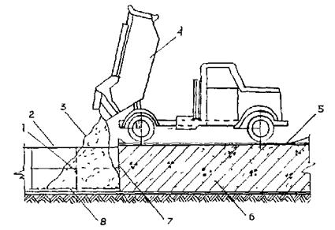
Рис. 7. Бетонирование плиты автобетоносмесителями, автобетоновозами или автосамосвалами методом «от себя»:
1 - арматурный каркас; 2 - верхняя арматурная сетка; 3 - бетонная смесь; 4 - автобетоновоз; 5 - настил из досок; 6 - готовый участок плиты; 7 - рабочий шов; 8 - нижняя арматурная сетка
5.13. Для въезда-съезда автотранспорта с бетонной смесью на возводимые плиты необходимо устраивать временные пандусы.
5.14. Бетонирование с помощью кранов с бункерами (бадьями) совместно с укладкой бетонной смеси из автотранспорта непосредственно в плиту следует применять при необходимости укладки бетона в темпе, превышающем 50 м3 в смену. Работу выполнять согласно п. 5.11 (рис. 8).
5.15. Бетонирование плиты бетононасосом следует производить при необходимости обеспечения высоких темпов бетонирования (до 250 м3 в смену) при условии доставки к насосу бетонной смеси, соответствующей паспортным данным (пластичность, крупность инертных составляющих и других параметров), автобетоносмесителями (СБ-92, СБ-69). Рекомендуемое время и режим транспортирования в автобетоносмесителях приведены в таблице приложения.
5.16. При бетонировании (см. п. 5.9) следует применять башенные, гусеничные или пневмоколесные грузоподъемные краны с бункерами (бадьями), емкостью 0,5-2,0 м3 с регулируемыми затворами.
Бетонную смесь следует доставлять автобадьевозами, автобетоновозами СБ-113, автобетоносмесителями СБ-92, СБ-69, С-1036Б, автосамосвалами.
Бетонирование плит с применением бетононасосов должно производиться в соответствии с требованиями нормативных документов, перечисленных в п. 5.1 и «Инструкции по транспортировке и укладке бетонной смеси в монолитные конструкции с помощью автобетоносмесителей и автобетононасосов «Вибау», «Штеттер» и «Томсен» на объектах Главмосстроя (Мосоргпромстрой, 1978) и «Руководства по укладке бетонных смесей бетононасосными установками ЦНИИОМТП» (М., Стройиздат, 1978).
Рис. 8. Одновременная укладка бетонной смеси краном с бадьями, из самосвалов с задней и боковой разгрузкой или автобетоновозов непосредственно в плиту:
1 - кран; 2 - самосвал (автобетоновоз); 3 - бадья; 4 - прижимная стенка; 5 - деревянный настил; 6 - плита
5.17. Подачу бетонной смеси бетононасосами необходимо выполнять в соответствии со следующими правилами:
перед началом работ бетононасос и весь комплект бетоновода должны быть испытаны гидравлическим давлением, величина которого указывается в паспорте установки;
назначенный состав и подвижность бетонной смеси должны быть проверены и уточнены на основании пробных перекачек смеси;
внутренняя поверхность бетоновода должна быть непосредственно перед бетонированием увлажнена и смазана известковым или цементным раствором;
при перерывах (20-60 мин) в перекачке смеси необходимо каждые 10 мин прокачивать бетонную смесь по системе в течение 10-15 сек. на малых режимах работы бетононасосов. При перерывах, превышающих указанное время, бетоновод должен быть опорожнен и очищен или промыт;
распределение бетонной смеси следует осуществлять с помощью специальных стрел, установленных в зоне бетонирования;
резинотканевые рукава, используемые для распределения бетонной смеси, должны иметь диаметр не более 125 мм.
5.18. Бетонирование плит с применением бетононасосов в зимних условиях должно производиться в соответствии с «Руководством по укладке бетонных смесей бетононасосными установками» ЦНИИОМТП (М., Стройиздат, 1978).
5.19. Бетонная смесь должна укладываться в бетонируемую конструкцию горизонтальными слоями одинаковой толщины, без разрывов, с последовательным направлением укладки в одну сторону во всех слоях.
5.20. Для хождения людей при бетонировании по верхней сетке арматуры укладываются щиты из досок.
5.21. Продолжительность времени между укладкой и уплотнением последовательно укладываемых слоев бетонной смеси не должна превышать двух часов.
5.22. Бетонную смесь уплотняют внутренними вибраторами ИВ-19, ИВ-19А, ИВ-47, ИВ-78, ИВ-80, ИВ-59, ВП-1, ВП-3 и др. и поверхностными вибраторами ИВ-91.
5.23. Вибрирование уплотняемого слоя следует вести при положении внутреннего вибратора под углом 30-35° к горизонту.
5.24. Толщина укладываемого слоя бетонной смеси должна быть: на 5-10 см меньше длины рабочей части вибратора - при применении тяжелых подвесных вертикально расположенных вибраторов;
равна вертикальной проекции длины рабочей части вибратора - при применении вибраторов, расположенных под утлом к вертикали (до 35°).
Наибольшая толщина укладываемого слоя при использовании ручных глубинных вибраторов не должна превышать 1,25 длины рабочей части вибратора.
При уплотнении бетонной смеси поверхностными вибраторами толщина слоя не должна превышать 250 мм.
5.25. Уплотнение укладываемой бетонной смеси необходимо производить с соблюдением следующих правил:
шаг перестановки глубинных вибраторов не должен превышать полуторного радиуса их действия;
глубина погружения глубинного вибратора в бетонную смесь должна обеспечить углубление его в ранее уложенный слой на 5-10 см;
шаг перестановки поверхностных вибраторов должен обеспечивать перекрытие на 100 мм площадкой вибратора границы уже провибрированного участка;
опирание вибраторов во время их работы на арматуру и закладные части бетонируемых конструкций, а также на тяги и другие элементы ее крепления не допускается.
5.26. Уплотнение бетонной смеси зависит от продолжительности вибрирования. Уплотнение можно считать достаточным, если прекращается оседание смеси, выделение пузырьков воздуха, появляется цементное молоко на ее поверхности.
5.27. В случае обнаружения деформации или смещения опалубки бетонирование должно быть прекращено и опалубка исправлена до начала схватывания бетона.
5.28. Разбирать опалубку разрешается только при согласовании с производителем работ в сроки, предусмотренные СНиП.
5.29. Во время дождя бетонируемый участок должен быть защищен (полимерной пленкой, легкими передвижными навесами, брезентовыми колпаками и т.п.) от попадания воды в бетонную смесь. Бетон, размытый дождем, следует удалить.
5.30. По окончании бетонирования каждого блока (захватки) необходимо:
предохранять твердеющий бетон от ударов, сотрясений и других механических воздействий;
осуществлять мероприятия по выдерживанию свежеуложенного бетона до установленной прочности (уход за бетоном);
регулярно увлажнять поверхность бетона водой. После приобретения бетоном прочности 3-5 кг/см2 укрывать его поверхности гидрофильными материалами (брезент, мешковина, опилки, песок и др.), поддерживаемыми постоянно во влажном состоянии периодическим рассеянным поливом их водой. В начальный период ухода за бетоном, во избежание размыва и порчи его поверхности, следует укрывать его полимерными пленками, брезентом, мешковиной.
5.31. Если постоянное увлажнение водой нецелесообразно или невозможно, бетон следует укрывать полимерными пленками (поливинилхлоридной, полиэтиленовой). Полотнища полимерной пленки должны быть по возможности максимальной площади; укладываться внахлестку; в местах нахлестки - плотно прилегать друг к другу, а их кромки - к бетону.
Покрывать бетон пленкообразующими составами (эмульсии, суспензии, растворы) следует только для ухода за бетоном, не предназначенным в дальнейшем для монолитного контакта с бетоном или раствором, и осуществлять нанесением на поверхность бетона специальных эмульсий или суспензий (например, эмульсии на основе битумов БН-I, БН-II, БН-III или битумов нефтяных дорожных БНД-130/200, 60/90).
Пленкообразующие материалы следует наносить через 2-3 часа после укладки бетона с помощью краскопультов или пневматических пистолетов-разбрызгивателей. Выдерживать бетон с применением инвентарных устройств (передвижных тентов, шатров, навесов с ограждениями из полимерных пленок, брезента и др. пароводонепроницаемых тканей) целесообразно при больших объемах работ. При этом должно быть исключено сквозное продувание между устройствами и бетоном. В дождливую погоду свежеуложенный бетон следует укрывать пленками, мешковиной, брезентом и вышеперечисленными инвентарными устройствами.
5.32. Во избежание повреждения свежеуложенного бетона движущими грунтовыми водами необходимо оградить его от размывания до достижения прочности не ниже 50 кг/см2.
5.33. Движение людей по забетонированным участкам плиты, а также установка на них лесов и опалубки для возведения вышележащих конструкций допускается при достижении бетоном прочности не ниже 15 кг/см2.
5.34. Движение автотранспорта и других машин по забетонированным участкам плиты разрешается только по достижении бетоном прочности, предусмотренной проектом производства работ, либо по согласованию с проектной организацией.
5.35. Проверка подвижности или жесткости бетона должна производиться у места его приготовления и укладки: не реже двух раз в смену - в условиях установившейся погоды и постоянной влажности заполнителей; и не реже чем через каждые два часа - при резком изменении влажности заполнителей, а также при переходе на изготовление смеси нового состава или из новой партии материалов.
5.36. Качество бетона в процессе укладки и после окончания бетонирования должно контролироваться в соответствии с требованиями СНиП 2.03.01-84, ГОСТ 1810.5-72, главы 6 «Руководства по производству бетонных работ» (ЦНИИОМТП, 1975) и «Руководства по совершенствованию организации и проведения контроля качества при производстве строительно-монтажных работ» (ЦНИИОМТП, 1978).
Прочность бетона плиты определяется испытанием на сжатие контрольных бетонных кубов в соответствии с действующим ГОСТом.
5.37. Бетонирование плиты должно сопровождаться записями в «Журнале бетонных работ» по следующим пунктам:
дата начала и окончания бетонирования (по конструкциям, блокам, участкам и т.п.);
заданные марки бетона, рабочие составы бетонной смеси и показатели ее подвижности (жесткости);
объем выполненных бетонных работ по отдельным частям сооружения;
дата изготовления контрольных образцов бетона, их количество, маркировка (с указанием места конструкции, откуда взята бетонная смесь), сроки и результаты испытания образцов;
температура наружного воздуха во время бетонирования;
температура бетонной смеси при укладке (в зимних условиях), а также при бетонировании массивных конструкций;
тип опалубки и дата распалубки конструкции.
5.38. Результаты контроля качества бетона должны записываться в журнале по форме, установленной лабораторией строительной организации.
5.39. Бетонирование фундаментных плит в зимних условиях следует вести в соответствии с требованиями СНиП 2.03.01-84, раздела 2 «Руководства по производству бетонных работ» (М., Стройиздат, 1975), «Руководства по зимнему бетонированию с применением метода термоса» (М., Стройиздат, 1978) и «Указаний по технологии бетонирования безобогревным способом монолитных железобетонных конструкций с применением ускоренного термоса» (ВСН 115-75 Главмосстроя).
5.40. Способы бетонирования фундаментных плит в зимних условиях, то есть при среднесуточной температуре наружного воздуха ниже +5 °С и минимальной суточной температуре ниже 0 °С, должны обеспечивать получение в заданные сроки бетона проектной прочности, морозостойкости, водонепроницаемости и других свойств, указанных в проекте, а также сохранение монолитности фундамента.
5.41. В зимних условиях температурно-влажностный режим выдерживания бетона монолитных фундаментных плит, имеющих, как правило, модуль поверхности ≤3, следует обеспечивать способом термоса или термоса с применением ускорителей твердения бетона.
При невозможности получения с помощью этих способов требуемой прочности бетона в заданные сроки могут быть применены способы ускоренного термоса (выдерживание бетона с противоморозными добавками методом термоса), и, как исключение, обогревы паром, горячим воздухом и в тепляках.
5.42. Состояние основания, на которое укладывается бетонная смесь, а также способ укладки с последующим выдерживанием бетона методом термоса должны исключать возможность замерзания бетона в контакте с основанием и деформации основания.
5.43. В зимних условиях открытые поверхности укладываемого бетона после окончания бетонирования (при больших поверхностях - по мере бетонирования отдельных участков), а также на время перерывов в бетонировании - должны тщательно укрываться пароизоляционным материалом (полимерная пленка, толь, рубероид и т.п.) и утепляться в соответствии с теплотехническим расчетом.
5.44. При бетонировании стаканов под колонны необходимо обеспечить соблюдение допусков, предусмотренных в рабочих чертежах, особенно в отношении отметок днищ стаканов и их размеров.
5.45. Сборные железобетонные башмаки со стаканами под колонны подземной части здания следует устанавливать на слой цементного раствора предусмотренной проектом марки, выверяя положение их как по осям здания, так и по отметке днища стакана.
6.1. По окончании земляных работ перед устройством ленточных фундаментов необходимо тщательно проверить расположение основных осей здания и вынести их на строительную обноску, устанавливаемую на расстоянии не менее трех метров от бровки котлована.
6.2. Основание под фундаменты должно быть тщательно выверено по нивелиру в соответствии с проектными отметками.
6.3. Для разбивки фундамента рекомендуется применять инвентарную трубчатую обноску. Положение осей здания фиксируется струнами из стальной проволоки, натягиваемыми по осям на обноске, и переносится на дно котлована с помощью отвесов, опускаемых с натянутых струн.
6.4. Фундаментные блоки следует укладывать на тщательно выровненное песчаное основание или песчаную подушку толщиной не менее 5 см. Не допускается укладывать блоки фундамента на насыпной слой грунта.
Случайные переборы грунта в отдельных местах должны быть заполнены тем же грунтом (разрабатываемым в выемке) или песком и доведены до естественной плотности.
В отдельных случаях места переборов заполняются тощим бетоном. При этом способ заполнения переборов грунта следует согласовать с проектной организацией.
6.5. Монтаж крупногабаритных деталей подземной части домов следует производить с транспортных средств. Для мелких элементов допускается устройство приобъектного склада.
6.6. Монтаж фундаментных блоков выполняется по захваткам. На каждой захватке монтаж надлежит начинать с укладки угловых и маячных блоков, расположенных по крайним осям секций, производя тщательную инструментальную выверку правильности их положения относительно разбивочных осей и отметок (рис. 9). После этого последовательно укладываются промежуточные блоки, монтаж которых производится вдоль поперечных фундаментных лент в направлении «на кран». Промежуточные блоки устанавливаются по шнуру, натянутому между маячными блоками, по которому определяется положение монтируемых блоков в плане и по вертикали. В последнюю очередь на захватке укладывают фундаментные блоки входов.
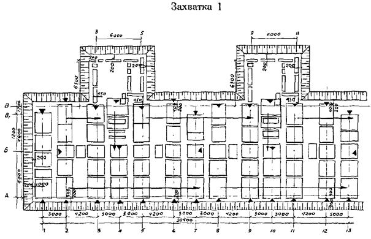
Условные обозначения: 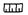
Рис. 9. Пример монтажа сборного ленточного фундамента жилого дома
В процессе монтажа разрывы между фундаментными блоками заполняют в соответствии с проектом (шириной до 70 мм - песком с послойным уплотнением, а более 70 мм - бетоном марки 200).
6.7. При монтаже фундаментных блоков должен осуществляться постоянный геодезический контроль за правильностью монтажа и соблюдением геодезической схемы соосности основных конструкций подземных частей здания.
Величина отклонения смонтированных фундаментных блоков от проектного положения не должна превышать следующих допусков:
смещение фундаментных блоков относительно разбивочных осей ±10 мм;
отклонение в отметках верхних опорных поверхностей фундаментных блоков - 10 мм.
6.8. Приемка фундаментов здания производится представителями заказчика, проектной и строительной организацией и оформляется соответствующим актом.
6.9. После окончания устройства фундамента производят обратную засыпку и уплотнение грунта под полы техподполья (подвала).
7.1. К монтажу конструкций подземной части зданий разрешается приступать после инструментальной проверки соответствия проекту высотных отметок и положения в плане фундаментов, приемки их, а также после устройства подготовки под полы техподполья. Приемка фундаментов производится представителями заказчика, проектной и строительной организацией и оформляется соответствующими актами. Без приемки оснований и фундаментов монтаж конструкций подземной части здания запрещается.
7.2. Монтаж конструкций подземной части здания следует осуществлять в соответствии с проектом, действующими СНиПами и настоящей инструкцией, соблюдая последовательность, предусмотренную проектом производства работ, обеспечивая устойчивость и пространственную жесткость конструкций в процессе сборки до окончательного их закрепления.
При монтаже сборных элементов следует придерживаться принципа установки элементов в направлении «на кран».
7.3. При выполнении монтажных работ должен вестись геодезический контроль за правильностью монтажа и обеспечением проектного положения основных конструкций подземной части здания.
7.4. Монтаж основных элементов подземной части домов следует, как правило, производить непосредственно с транспортных средств, обеспечивая своевременную доставку изделий по часовым транспортно-монтажным графикам.
Монтаж с транспортных средств должен вестись по специально разработанным в проектах производства работ технологическим картам и оперативной документации (по часовым графикам доставки и монтажа сборных деталей, комплектовочным ведомостям и т.п.).
7.5. Монтаж конструкций подземной части дома следует производить с разделением здания на захватки в соответствии с технологическими картами проекта производства работ.
7.6. Монтаж бетонных стеновых блоков следует производить горизонтальными рядами в пределах захватки. При этом поверхности наружных стен подвалов и подполья в целях уменьшения возможного воздействия морозного пучения должны выравниваться по наружной стороне. Поверхности внутренних стен выравниваются по одной из лицевых граней. Вертикальные стыки, а также отдельные места между блоками следует заделывать, руководствуясь требованиями проекта.
7.7. Перед началом монтажа сборных конструкций подземной части дома необходимо:
определить монтажный горизонт (для чего производится нивелировка фундаментной плиты или ленточного фундамента);
произвести инструментальную разбивку проектных осей базовых панелей, панелей внутренних продольных и наружных стен, а также рисок, по которым в процессе монтажа осуществляется ориентация торцевых граней поперечных стеновых панелей;
при необходимости установить монтажные маяки под каждую стеновую панель на расстоянии 20-30 см от торцов.
7.8. Монтаж элементов на каждой захватке рекомендуется производить поэтапно, начиная с установки панелей внутренних стен, в указанной ниже последовательности:
вначале устанавливаются базовые панели внутренних поперечных стен (рис. 10);
монтируются в направлении от базовых панелей панели внутренних поперечных стен, а затем примыкающие к ним панели внутренних продольных стен;
устанавливаются цокольные панели наружных стен (рис. 11);
монтируются элементы лестнично-лифтовых узлов;
после окончания монтажа панелей стен на захватках укладываются панели перекрытия. До начала монтажа перекрытия должны быть установлены постоянные крепления смонтированных элементов и произведена тщательная выверка положения верхних опорных граней панелей несущих стен, устроены полы и поданы в техническое подполье трубопроводы, узлы санитарно-технических систем, бойлеры и другое оборудование;
в последнюю очередь на захватке монтируются элементы входов.
В процессе совершенствования технологии производства работ допускаются отдельные изменения приведенной последовательности монтажа сборных элементов подземной части домов повышенной этажности. Однако все изменения в последовательности монтажа элементов должны быть обязательно увязаны с утвержденной проектной документацией (технологическими картами ППР).
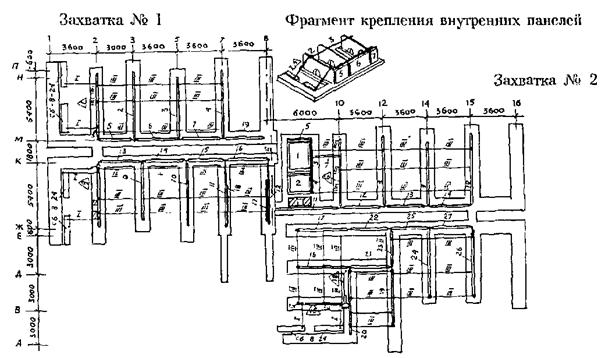
Условные обозначения:
Δ - начало монтажа (разовые элементы)
1-27 - монтажные номера элементов;
I - штанга телескопическая со струбциной;
II - струбцина-фиксатор (начальная);
III - струбцина-фиксатор (звеньевая);
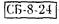
- анкерные блоки;х - устройство постоянных креплений по проекту
Рис. 10. Пример последовательности монтажа и временного крепления панелей внутренних стен подземной части жилого дома
Условные обозначения:
Δ - начало монтажа на захватке;
1-26 - монтажные номера элементов;
─┤ - подкос для временного крепления наружных панелей (черт. ОР-5645);
─┘ - угловая струбцина (черт. № 2148);
└─┘ - угловая струбцина (черт. 1946);
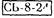
х - устройство постоянных креплений по проекту
Рис. 11. Пример последовательности монтажа и временного крепления панелей наружных стен подземной части жилого дома
7.9. Монтаж стеновых панелей подземной части домов повышенной этажности следует производить в соответствии с технологическими картами (разработанными трестом Мосоргстрой) и проектом производства работ, предусматривающими использование нормокомплекта грузозахватных и монтажных приспособлений. В нормокомплект входят штанги с осевым зажимом, предназначенные для временного крепления и установки панелей внутренних поперечных несущих стен в проектное положение по их геометрическим осям, и монтажные связи для временного крепления панелей внутренних продольных и наружных стен.
Перед началом монтажа необходимо произвести контрольную регулировку штанг по шаблону с точностью до 45 мм.
На каждой захватке монтаж внутренних стеновых панелей следует начинать с установки базовых панелей, производя тщательную инструментальную выверку правильности их положения с помощью геодезических инструментов, так как от точности установки базовых элементов зависит точность монтажа последующих панелей. Базовые панели необходимо временно надежно крепить двумя телескопическими подкосами, закрепляемыми за инвентарные петли на верху панелей, а внизу - за монтажные петли анкерных болтов или к специальным петлям, закладываемым при бетонировании ростверка или плиты.
После выверки и временного закрепления базовых панелей приступают к монтажу остальных панелей внутренних поперечных стен, установку которых ведут последовательно в направлении от базовых панелей с закреплением их в двух уровнях по высоте штангами с осевыми зажимами. Каждую очередную стеновую панель, подаваемую монтажным краном к месту установки, опускают, не доводя до растворной постели на 3-4 см, и после этого закрепляют штангами к ранее установленной панели. Закрепление производят тремя штангами одну внизу - в проеме для пропуска коммуникаций и двумя - по верху панели. После закрепления штангами панель опускают и она занимает проектное положение, так как три точки фиксации с помощью штанг гарантируют параллельность по отношению к базовой панели, а конструкция осевого зажима штанги обеспечивает установку панели по геометрическим осям. Положение панели внутренних стен в поперечном направлении при монтаже контролируют по их торцевым граням и рискам, нанесенным на фундамент, или по шнуру.
Панели внутренних продольных стен устанавливают по рискам и крепят к установленным панелям поперечных стен двумя монтажными связями или путем установки постоянных креплений.
Панели внутренних стен монтируют на цементном растворе марки 200, расстилаемом на опорные поверхности фундамента.
Панели наружных стен устанавливают на слой цементного раствора, ориентируя их по рискам геодезической разбивки, и временно закрепляют каждую панель в двух точках монтажными связями, струбцинами или штангами для крепления торцевых наружных панелей к ранее установленным панелям внутренних поперечных стен.
7.10. Сразу же за установкой стеновых панелей и их временным закреплением должны устраиваться постоянные связи, предусмотренные архитектурно-строительной частью проекта.
7.11. Способы временного крепления сборных элементов подземной части дома при их монтаже, а также типы временных креплений, количество, порядок установки и время крепления устанавливаются технологическими картами проекта производства работ.
7.12. Освобождение установленных элементов от временных креплений может производиться только после устройства постоянных связей, предусмотренных проектом.
7.13. Перечень рекомендуемой монтажной оснастки, грузозахватных приспособлений и инвентаря для монтажа подземной части домов повышенной этажности приводится в проекте производства работ.
7.14. После окончания монтажа и постоянного закрепления в соответствии с проектом панелей внутренних и наружных стен снимают монтажные приспособления и приступают к монтажу панелей перекрытия над техническим подпольем.
Монтаж панелей перекрытия следует вести на захватке посекционно, последовательно укладывая панели в направлении «на кран» от лестничной клетки, до границ секции. Панели перекрытия монтируют на пластичном цементном растворе, расстилаемом только на опорные поверхности панелей несущих стен непосредственно перед укладкой панелей. Монтаж панелей перекрытия следует производить с применением универсального грузозахватного устройства с автоматическим кантователем.
Стыки между торцами панелей перекрытия и наружными стенами утепляют вкладышами из полистирольного пенопласта ПСБ-С или плит ППС-75. После установки монтажных связей все стыки между панелями перекрытия, а также гнезда в местах расположения соединительных связей следует тщательно заделать цементным раствором марки 200.
7.15. Монтаж панелей наружных и внутренних стен, перекрытия и других сборных элементов подземной части домов выполняется на пластичном цементном растворе марки 200 с толщиной монтажных швов 20 мм. Выступающие подъемные петли после монтажа срезают заподлицо, а подъемные петли, находящиеся в лунках, не срезают, а лунки заделывают раствором.
Соединение панелей наружных и внутренних стен, перекрытия и других элементов осуществляется металлическими связями на сварке в соответствии с конструктивными решениями соответствующих узлов проекта.
Электросварка должна непрерывно следовать за монтажом конструкции и до замоноличивания стыков сдаваться по акту на скрытые работы лицам, осуществляющим технический и авторский надзор.
Противокоррозионная защита закладных деталей и соединительных связей должна выполняться в соответствии с проектом и требованиями СНиП, ВСН 106-75 и ВСН 141-77 Главмосстроя.
Все места сварки соединений сборных элементов, включая закладные и соединительные детали, после приемки соединений должны быть тщательно заделаны цементным раствором марки 200 в соответствии с проектом.
7.16. Заделка и герметизация стыков наружных стен подземной части домов повышенной этажности выполняются в соответствии с решениями узлов проекта и требованиями СН 420-71 и ВСН 15-75.
Местные заделки в стенах техподполья следует выполнять из бетона марки 200 на мелкой фракции.
7.17. Отверстия в настилах перекрытий для пропуска стояков инженерных сетей нужно сверлить, не нарушая ребер настилов.
Перед бетонированием монолитных участков перекрытия должно быть произведено освидетельствование армирования с составлением акта на скрытые работы.
7.18. После окончания монтажа перекрытия, установки постоянных связей и нанесения гидроизоляции на наружные поверхности стен технического подполья, соприкасающихся с грунтом, а также устройства (если это предусмотрено проектом) дренажа, производится обратная засыпка пазух грунтом и планировка участка вокруг здания. Засыпку грунта в пазухи следует выполнять бульдозером, передвигающимся под углом к наружным стенам так, чтобы давление от бульдозера через перемещаемый грунт не передавалось на конструкции здания.
Обратная засыпка пазух должна производиться послойно с тщательным уплотнением грунта пневматическими или другими трамбовками. В зимних условиях обратную засыпку пазух следует производить только талым грунтом.
7.19. По окончании работ нулевого цикла исполнитель сдает по акту законченную подземную часть здания со всеми относящимися к ней работами автору проекта, заказчику и представителям монтажного управления, осуществляющего монтаж надземной части, представляя при этом исполнительную геодезическую схему разбивки осей, смонтированных конструкций подземной части здания, а также другую документацию в соответствии с требованиями настоящей инструкции.
7.20. При приемке подземной части здания и работ нулевого цикла проверяются:
правильность разбивки здания;
соответствие фактических и проектных осей здания и смонтированных конструкций, а также отметок монтажного горизонта с учетом допусков, предусмотренных в СНиПе и проекте;
тщательность монтажа конструкций, устройства креплений и заделки стыков между элементами в соответствии с проектом;
отсутствие повреждений смонтированных конструкций и деталей;
наличие актов на скрытые работы;
готовность инженерных коммуникаций (тепло- и водоснабжения, канализации и электроснабжения) вертикальной планировки территории, подъездов и дорог.
8.1. До наступления зимних условий на застраиваемой площадке должны быть выполнены:
мероприятия по предохранению от промерзания подлежащего разработке земельного участка (предварительное рыхление, удержание снегового покрова);
утепление, обогрев бытовых помещений для сушки одежды и обуви.
8.2. Рабочие должны быть обеспечены спецодеждой и обувью в соответствии с действующими нормами и характером выполняемой работы.
8.3. Проезды, проходы, погрузочно-разгрузочные площадки, рабочие места следует регулярно очищать от снега и наледи, проходы для рабочих при уклонах более 20° должны быть оборудованы стремянками или лестницами с боковыми ограждениями высотой 1,1 м.
8.4. Очередность и последовательность выполнения работ нулевого цикла в зимних условиях зависит от степени готовности работ в начале зимнего периода, а именно:
если к началу зимы на строительной площадке закончена срезка растительного слоя и выполнена вертикальная планировка;
если к началу зимнего периода работы нулевого цикла не были начаты, то необходимо перенести на теплое время года возможно больший объем таких работ, как срезка растительного грунта, вертикальная планировка территории, а также строительство постоянных дорог и бетонные работы в технических подпольях зданий (устройство полов и отмосток).
Исключение допускается в случае необходимости срезки слоя земли толщиной более 1-1,5 м на месте будущего здания и площадках вокруг него, в местах расположения складов, путей и проездов, необходимых для стройки.
Такая очередность выполнения работ может вызвать в ряде случаев необходимость во временных дорогах для строительства, поскольку постройка постоянных дорог запаздывает, установки кранов и размещения материалов и деталей с выполнением необходимых подсыпок талым песчаным грунтом по неспланированной площадке, так как вертикальная планировка в зимних условиях затруднительна, а при малой высоте срезки нецелесообразна. Эти особенности должны учитываться в проектах организации строительства и производства работ.
8.5. Для того, чтобы уменьшить глубину промерзания грунтов и предупредить промерзание грунтовых оснований, следует:
участки строительной площадки, на которых зимой должны быть вырыты котлованы или сделана срезка, своевременно предохранять от промерзания посредством вспашки на глубину 30-35 см. Вспаханный слой грунта боронуют на глубину 10-15 см. При этом глубина промерзания грунта к концу зимы составляет не более 1 м. Способ целесообразен при производстве земляных работ в первой трети зимы;
перелопатить грунт экскаватором на глубину возможного промерзания, но не более 1,5 м;
дно котлованов, отрываемых для подземной части зданий и сооружений в зимних условиях либо отрытых ранее и оставленных на зиму, утеплить по одному из способов, указанных в таблице. В ней даны указания по защите от промерзания оснований фундаментов жилых и культурно-бытовых зданий в период строительства.
Таблица
Рекомендуемые способы утепления грунтов и оснований фундаментов от промерзания в зимний период
|
Способ утепления |
Схема |
|
1. Утепление грунта вспашкой на глубину не менее 35 см с последующим боронованием на глубину 10-15 см (применяется осенью для предохранения грунта от промерзания в случае, когда рытье котлована планируется на зимний период времени) |
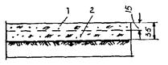 |
|
2. Укрытие поверхности грунта утепляющими материалами - опилками, матами, соломой и др. толщиной слоя не менее 10 см (применяется осенью для предохранения грунта от промерзания, если рытье котлованов планируется на зимний период времени) |
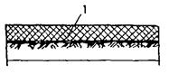 |
|
3. Утепление снегозадержанием - установка снегозадерживающих щитов, устройств валов из снега толщиной не менее 80 см (применяется для приостановки дальнейшего промерзания грунта) |
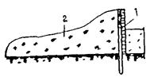 |
|
4. Утепление котлована с фундаментами слоем разрыхленного грунта минимальной влажности. Если подвал с таким утеплением оставляют на всю зиму, то перекрытия должны быть смонтированы, а проемы закрыты (рекомендуется применять в тех случаях, когда грунт из технического подполья не удаляется) |
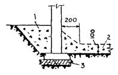 |
|
5. Утепление котлована с фундаментами слоем сухого котельного шлака (если подвал с таким утеплением оставляют на всю зиму, то перекрытия должны быть смонтированы, а проемы - закрыты). |
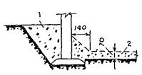 |
|
6. Утепление подошвы фундаментных блоков слоем котельного шлака толщиной 10 см, укладываемого вместо песчаной подготовки, а внутренней поверхности фундаментов - шлаком или золой ТЭЦ (применяется аналогично п. 5) |
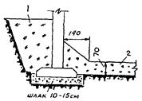 |
Примечание. Утеплять фундаменты на гравелистых и песчаных грунтах, промерзание и оттаивание которых не вызывает пучения и деформации основания, не требуется.
8.6. Разработку мерзлых грунтов в зависимости от глубины промерзания следует выполнять:
при глубине промерзания до 0,25 м - экскаватором
при глубине промерзания до 0,35 м - землеройной фрезерной машиной ЗФМ-2300А
при глубине промерзания до 1,3 м - баровой машиной.
8.7. Пазухи между стенами техподполья (подвала) и откосами котлована следует засыпать талым грунтом.
8.8. Засыпку под полы следует производить талым грунтом с немедленным уплотнением.
8.9. В зимних условиях устраивать фундаменты на естественном основании, включая подготовку под них, следует немедленно вслед за отрывкой грунта и зачисткой грунтового основания, не допуская его промерзания.
8.10. При монтаже фундаментов и стен подвала в зимних условиях необходимо выполнять следующие требования:
раствор для кладки блоков должен иметь температуру не ниже 15° и храниться в утепленных ящиках с крышками. Применение раствора после начала его схватывания не разрешается. Конструкции, смещенные с растворной постели в период ее твердения, должны быть подняты и после очистки опорных поверхностей от старого раствора вновь установлены на свежий раствор;
запрещается применять растворы и бетоны с добавками хлористого кальция или хлористого натрия. Не разрешается применение растворов и бетонов без паспортов и накладных, в которых должны быть указаны наименования и величины противоморозных добавок;
укладка и разравнивание раствора должны производиться перед посадкой элемента на место;
дополнительные мероприятия по усилению конструкций и обеспечению их устойчивости в период оттаивания (повышение марок раствора, закладка металлических связей и т.д.), предусмотренные в связи с производством работ зимой, должны быть указаны в проектах и в ППР и обязательно выполнены в натуре.
8.11. Бетонирование монолитной железобетонной плиты должно выполняться в соответствии с требованиями СНиП, ГОСТ 7473-76. Монолитную железобетонную плиту рекомендуется бетонировать методом ускоренного термоса и безобогревным методом с применением химических добавок в бетоне. При всех методах бетонирования рекомендуется изготовлять бетон на портландцементе марки 300 и выше.
Бетон к моменту понижения в нем температуры до 0° должен набрать не менее 70 % марочной прочности, а в случае окончания монтажа всех этажей в зимнее время - не менее 100 %.
Приготовленная с добавкой нитрита натрия бетонная смесь должна при укладке иметь температуру не ниже ±5 °C.
Бетонирование методом ускоренного термоса должно выполняться в соответствии с требованиями «Указаний по технологии бетонирования безобогревным способом монолитных железобетонных конструкций с применением ускоренного термоса».
При бетонировании безобогревным способом следует выполнять требования «Руководства по производству бетонных работ» (М., Стройиздат, 1975) и ВСН 162-79.
8.12. Монтаж элементов должен выполняться комбинированным или безобогревным способом с применением в растворе и бетоне противоморозных добавок нитрита натрия, нитрата натрия и «Сигман» согласно требованиям ВСН 159-81.
Монтаж надземной части может быть разрешен по достижении раствором и бетоном в горизонтальных и вертикальных стыках подземной части прочности, указанной в проекте.
8.13. Местные заделки в стенах технического подполья и монолитные участки между настилами перекрытия над техническим подпольем следует бетонировать бетоном марки 200 безобогревным методом с добавкой в бетон кристаллического нитрита натрия. При отсутствии нитрита натрия рекомендуется электропрогрев бетона стержневыми электродами, при этом следует выполнять требования «Руководства по электротермообработке бетона» НИИЖБа (М., Стройиздат, 1974).
8.14. Все стыки между панелями перекрытия, зазоры между блоками техподполья шириной до 150 мм, кирпичную кладку и монтаж стен следует выполнять на растворе с противоморозной добавкой кристаллического нитрита натрия, руководствуясь «Инструкцией по применению комплексных добавок в цементных растворах при безобогревном монтаже сборных железобетонных конструкций жилых и общественных зданий ВСН 159-81; при этом необходимо повышать марку раствора с противоморозными добавками на ступень при среднесуточной температуре ниже -20 °С.
8.15. Раствор с противоморозными добавками при укладке в стыки должен иметь температуру не ниже +5 °С, для чего ящики для раствора должны быть оборудованы деревянными крышками.
Укладка раствора в стыки со снегом и наледью на поверхностях бетона недопустима. Для предохранения поверхностей бетона от снега и наледи стыки должны быть защищены переносными щитами или рулонными материалами с пригрузом (рубероид, пергамин и т.п.).
В случае образования наледи и снега в стыках поверхности бетона следует тщательно очищать металлическими щетками или скребками. Запрещается отогревать поверхности бетона паром или водой.
8.16. Работы по антикоррозийной защите сварных соединений в зимних условиях производить в соответствии с «Указаниями по восстановлению после сварки противокоррозионной защиты стальных связей панелей комбинированным покрытием» ВСН 106-75, а также в соответствии со СНиП «Защита строительных конструкций от коррозии» и ВСН 141-77.
8.17. Для обеспечения необходимого нарастания прочности бетона изделий и раствора в стыках, а также для производства штукатурных работ по отработке сопряжений между сборными элементами следует организовать временный обогрев с помощью калориферов, воздуходувок и других источников тепла.
8.18. Для быстрого нарастания прочности применяется электропрогрев бетона стержневыми электродами диаметром 6-8 мм, устанавливаемыми в бетон через 0,2 м. Температура бетонной смеси при начале электропрогрева должна быть не ниже +5 °С; при температуре воздуха ниже -10 °С для предохранения смеси от замерзания до включения электропрогрева рекомендуется применять для замоноличивания бетонную смесь с противоморозной добавкой нитрита натрия по ВСН 159-81 и ВСН 162-79 в количестве 6 % от массы цемента - в этом случае электроды устанавливаются через 0,4 м.
8.19. Напряжение в начале электропрогрева следует принимать не более 50 В (особенно при наличии в смеси добавки нитрита натрия), причем должна быть предусмотрена возможность повышения напряжения до 110 В. Открытая поверхность бетона сразу после его укладки должна быть тщательно укрыта толем или рубероидом и слоем теплоизоляции (опилками, ветошью, шлаковатой и т.п. материалами).
Электропрогрев бетонной смеси ведется в две стадии: сначала разогрев бетона со скоростью подъема температуры не более 10 °С в час и затем изотермический прогрев с температурой не выше 50 °С. Для достижения 40 %-ной марочной прочности бетона изотермический прогрев при 50 °С должен продолжаться 14 часов и общий цикл прогрева - 19 часов (5 часов - подъем температуры и 14 часов - изотермический прогрев).
Нарушение рекомендуемого режима электропрогрева, особенно в процессе разогрева бетона (более быстрый подъем температуры и более высокая температура изотермического прогрева), может вызывать трещины в бетоне.
8.20. В целях обеспечения прочности и устойчивости несущих конструкций, возводимых в зимний период либо находящихся в стадии строительства в период весеннего оттаивания (или отогрева) должны быть обязательно выполнены в натуре предусмотренные в проектах мероприятия по усилению конструкций (повышение марок раствора и бетона, закладка металлических связей, порядок обогрева конструкций, устройство временных креплений конструкций и откосов котлована, отвод поверхностных вод от фундаментов).
9.1. При строительстве подземной части жилых домов повышенной этажности из унифицированных изделий единого каталога должны выполняться правила техники безопасности, предусмотренные главой СНиП III-4-80 «Техника безопасности в строительстве», «Инструкцией по технике безопасности для рабочих, выполняющих работы нулевого цикла» (Мосоргстрой, 1982), «Правилами устройства и безопасной эксплуатации грузоподъемных кранов» (М., Металлургия, 1981), настоящей инструкцией, а также инструкциями по технике безопасности по производимым работам, проектам производства работ, картами безопасности труда рабочих в период монтажа подземной части крупнопанельных жилых домов из изделий единого каталога (Мосоргстрой, 1980), проектом производства работ.
9.2. Проект производства работ должен содержать конкретные технические решения и основные организационные мероприятия по обеспечению безопасности производства работ и санитарно-техническому обслуживанию работающих в соответствии со СНиП III-4-80, приложением 8, «Состав и содержание основных решений по технике безопасности в проектах производства работ (ППР)».
9.3. Монтаж подземной части жилых домов необходимо вести в строгом соответствии с проектом производства работ, содержащим следующие решения по технике безопасности и производственной санитарии:
индивидуальные и коллективные средства защиты;
организация рабочих мест, проходов и проездов;
последовательность и способы безопасного ведения технологических операций;
методы и приспособления для безопасной работы;
расположение, зоны действия и опасные зоны механизмов;
временное освещение строительной площадки, проходов, проездов в рабочих мест;
ограждение (обозначение) опасных зон;
состав, количество и расположение бытовых помещений;
способы складирования и строповки строительных материалов и сборных элементов здания.
Выполнение строительно-монтажных работ без проекта производства работ не допускается.
9.4. Ответственность за соблюдение требований по технике безопасности и производственной санитарии при выполнении строительно-монтажных работ на строительстве подземной части жилых домов возлагается на инженерно-технических работников монтажных потоков.
При появлении условий, угрожающих жизни или здоровью работающих, инженерно-технические работники потока должны сразу же прекратить выполнение строительно-монтажных работ на строящемся корпусе, принять меры по устранению возникшей опасности и сделать соответствующую запись в журнале производства работ.
Линейные инженерно-технические работники (мастера), производители работ, старшие производители работ, участковые механики и другие инженерно-технические работники по списку должностей, утвержденному вышестоящей организацией, обязаны периодически, не реже одного раза в год, проходить проверку знания ими правил техники безопасности и производственной санитарии с учетом характера выполняемых работ.
9.5. На каждой строительной площадке приказом по организации в каждую смену назначаются ответственные за безопасное производство работ по перемещению грузов кранами из числа аттестованных инженерно-технических работников и аттестованные такелажники (стропальщики), имеющие удостоверения о проверке знаний по соответствующим разделам правил и инструкций крановщика и стропальщика.
Табличка с фамилиями ответственных лиц должна быть вывешена на объекте на видном месте участка работ.
Обязанности лиц, ответственные за безопасное производство работ по перемещению грузов кранами, и стропальщиков при монтаже подземной части домов регламентируются в производственных инструкциях, которые должны находиться на строящемся объекте.
Рабочие допускаются к строительным работам только после прохождения ими инструктажа по безопасности труда с учетом особенностей возведения подземной части домов повышенной этажности.
Инструктаж по безопасности труда должен производиться для всех рабочих не реже одного раза в три месяца.
Машинисты грузоподъемных кранов, такелажники (стропальщики), обслуживающие грузоподъемные механизмы, должны пройти обучение в Учебном комбинате Главмосстроя по специальным программам, сдать экзамены и иметь соответствующее удостоверение.
Ежегодно они должны проходить переаттестацию по правилам безопасной эксплуатации грузоподъемных механизмов.
9.6. Руководители строительно-монтажных организаций обязаны обеспечить рабочих, инженерно-технических работников и служащих спецодеждой и обувью в соответствии с действующими нормами и характером выполняемой работы.
9.7. Все лица, находящиеся на строительной площадке, обязаны носить защитные каски установленных образцов. Рабочие и инженерно-технические работники без защитных касок и других необходимых средств индивидуальной защиты к выполнению работ не допускаются.
9.8. Подготовка и ввод в действие санитарно-бытовых помещений и устройств должны быть закончены до начала основных строительно-монтажных работ на объекте.
9.9. На каждом объекте строительства должны быть выделены помещения или места для размещения средств для оказания первой помощи пострадавшим: аптечек с медикаментами, носилок, фиксирующих шин и др.
9.10. Ограждение строительной площадки, устройство временных дорог, коммуникаций и других временных сооружений должны быть выполнены в соответствии с требованиями главы 4 СНиП III-4-80 и решениями проекта производства работ.
9.11. Строительная площадка в населенных местах во избежание доступа посторонних лиц ограждается сплошным забором высотой не менее 2 м. В местах массового прохода людей забор необходимо оборудовать сплошным защитным козырьком под углом 20° к горизонту.
9.12. Строительная площадка, участки работ, а также рабочие места, подъезды, проезды и подходы к ним в темное время суток должны быть освещены в соответствии с «Инструкцией по проектированию электрического освещения строительных площадок» и решениями производства работ. Освещенность должна быть равномерной, без слепящего действия осветительных приспособлений на работающих. Производство работ в неосвещенных местах не допускается, а доступ к ним людей должен быть закрыт.
9.13. У въезда на строительную площадку должна быть установлена схема движения средств транспорта, а на обочинах дорог и проездов - хорошо видимые дорожные знаки. Скорость движения автотранспорта вблизи мест производства работ не должна превышать 10 км/час на прямых участках и 5 км/час - на поворотах.
9.14. Проезды, проходы и рабочие места необходимо регулярно очищать, не загромождать, а если они расположены вне зданий - в зимнее время посыпать песком или шлаком.
Проходы с уклоном более 20° должны быть оборудованы трапами или лестницами с ограждениями.
9.15. Складирование и хранение материалов и сборных изделий на стройплощадке должно производиться в соответствии с требованиями проекта производства работ, «Указаний по приемке, складированию и хранению основных строительных материалов, изделий и конструкций на приобъектных и базисных складах Главмосстроя» (ВСН 28-66) и настоящей инструкции.
Прислонять (опирать) материалы и изделия к заборам и элементам временных и капитальных сооружений не допускается.
При расстроповке и строповке изделий для работы на складе необходимо пользоваться лестницей высотой 1,2 м (Мосоргстрой, черт. № 501 А). Пользоваться приставными лестницами запрещается.
9.16. Зоны, опасные для нахождения людей во время производства работ, должны быть ограждены и оборудованы хорошо видимыми предупредительными знаками, а в необходимых случаях должна быть обеспечена возможность подачи предупредительных звуковых сигналов.
Надзор над правильностью установки ограждений должен вести мастер или производитель работ. Всякая возможность нахождения людей в опасных зонах должна быть исключена.
Запрещается проезд автотранспорта и пребывание людей в зоне перемещения материалов и изделий кранами.
9.17. Строительные краны и грузоподъемные механизмы следует устанавливать в соответствии со стройгенпланом проекта производства работ.
Краны, экскаваторы и другие механизмы перед эксплуатацией должны быть освидетельствованы и испытаны, должен быть составлен акт в соответствии с требованиями «Правил устройства и безопасной эксплуатации грузоподъемных кранов» (Госгортехнадзор СССР, 1977).
Крюки кранов и грузозахватных приспособлений должны иметь предохранительные замыкающие устройства. На складах должны быть вывешены типовые схемы строповки основных деталей, разработанные проектом производства работ, а также указан состав стропальщиков и лиц, ответственных за перемещение грузов кранами.
9.18. Строповку грузов следует производить специально предназначенными для этих целей грузозахватными средствами или инвентарными стропами, предусмотренными проектом производства работ и изготовленными по утвержденным чертежам.
Масса перемещаемых кранами грузов не должна превышать грузоподъемности приспособлений строп, траверс и др. Не допускается применение неиспытанных и неисправных грузозахватных приспособлений. Стропы должны быть снабжены крюками соответствующей грузоподъемности с предохранительными замыкающими устройствами. Все грузозахватные приспособления должны быть испытаны, иметь паспорт завода-изготовителя, штамп ОТК и металлическую бирку (с указанием номера, грузоподъемности и даты испытания).
9.19. На таре должны быть указаны номер, собственная масса, наибольшая масса груза (для транспортировки которого она предназначена) и заводской знак.
В процессе эксплуатации съемные грузозахватные приспособления и тара должна подвергаться техническому осмотру лицом, ответственным за их исправное состояние, и в сроки, установленные требованиями «Правил устройства и безопасной эксплуатации кранов»: для стропов и тары - через каждые 10 дней, для траверс - не реже, чем через каждые 6 месяцев.
Результаты осмотра съемных грузозахватных приспособлений и тары необходимо регистрировать в журнале периодического осмотра.
9.20. При разгрузке элементов с транспортных средств шофер обязан выходить из кабины и находиться вне опасной зоны крана. Запрещается перемещать груз над кабиной шофера.
При разгрузке запрещается перемещать панелевоз после освобождения панелей от средств крепления. При необходимости перемещения панелевоза, панели вновь должны быть надежно закреплены.
При разгрузке элементов такелажник обязан сойти с транспортного средства сразу же после натяжения строп. При этом команду крановщику на подъем элемента он подает, стоя на земле на безопасном расстоянии от транспортного средства.
9.21. При доставке панелей перекрытий на объект в вертикальном положении перевод их в горизонтальное положение производится только с помощью специального грузозахватного устройства с автоматическим кантователем (Мосоргстрой, черт. № 6118А). Запрещается кантовать панели перекрытия с помощью обычных строп с опиранием панелей на землю.
9.22. При подъеме панелей перекрытия с помощью гидрокантователя необходимо руководствоваться «Инструкцией по эксплуатации гидрокантователя» (Мосоргстрой, 1977).
9.23. Организация рабочих мест при выполнении монтажных и других видов работ по подземной части здания должна обеспечивать безопасность выполнения работ.
Рабочие места должны быть свободными от посторонних предметов и мусора, а в случае необходимости - иметь ограждения, защитные и предохранительные устройства, а также приспособления.
Подача материалов, изделий и узлов оборудования на рабочие места должна осуществляться в технологической последовательности, обеспечивающей безопасность работ. Складировать материалы и изделия на рабочих местах следует так, чтобы они не создавали опасности при выполнении работ и не загромождали проходы.
СОДЕРЖАНИЕ
|
2. Подготовка грунтового основания. 3 6. Полносборные ленточные фундаменты.. 13 7. Монтаж конструкций нулевого цикла. 14 |